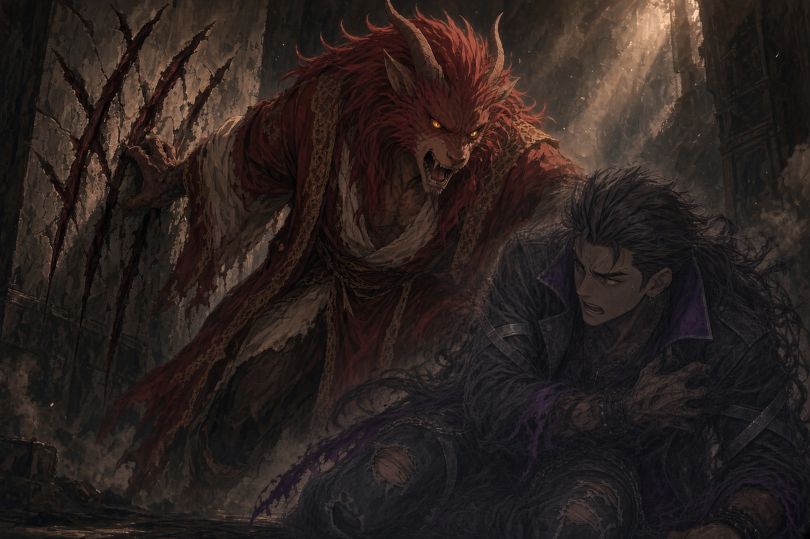

The ring went into the sewing basket, under the darning egg, beside a skein of blue wool.
Wren set it down carefully. It was a plain band of dull silver, no wider than a grass blade and still warm from his pocket. A grandmother’s ring, maybe, slipped off a finger years ago and lost among the buttons and pins. That was the point. Anything he left had to look like it had always been there, and anyone who came looking for whoever left it had to find nobody at all.
He stepped back into the shadow beside the hearth and looked at the basket, then at the room.
It was a woodcutter’s cottage, one room and a loft. The fire was banked low. The place smelled of pine pitch, onions and lye soap. Two chairs sat by the fire, a big one and a little one, worn into the shapes of the people who sat in them. A man’s shirt hung drying on a line across the hearth. It was enormous, and both elbows were patched with the same blue wool that sat in the basket. On the table, two cups had been washed and turned upside down to dry, side by side.
The woman who lived here had walked the path of black roses three nights ago. Wren hadn’t seen her do it and didn’t need to. He had read her wish on the list Karrabosse gave him, written in the Duchess’s small, slanted, beautiful hand on the back of a card that smelled of snow.
Let him never leave my side.
That was all. A woman who loved her husband and was afraid of losing him, which was a very stupid thing to be afraid of out loud anywhere near a path of black roses. The Duchess had given her exactly what she asked for. She always did.
Wren had read the card four times on the walk through the Sleeping Wood. He had stood outside the cottage for an hour before he went in, which was not hesitation. It was surveillance. He had watched the woodcutter come home at dusk with an ax on his shoulder and kiss his wife on the top of her head before he’d even set the ax down. She leaned into him like a plant leaning toward a window. It was frankly a little disgusting. It was also the least leaving-looking man Wren had ever seen.
She’ll find it tomorrow, he thought. She’ll be mending, she’ll think it’s pretty, and she’ll put it on. After that he won’t be able to go more than an arm’s length from her. Not to cut wood. Not to sell it. Not to sleep downstairs when he snores. Not ever.
He had done this, or something like it, a dozen times now. A silver rattle in a cradle. A comb on a windowsill. A pair of red shoes on a doorstep. He was good at it. Nobody ever saw him come or go. The things he left were always found, and the wishes were always granted, exactly as worded. Back home a trick hadn’t counted unless somebody filmed it. Here it only counted if nobody ever knew he’d been there, and by that measure he was getting very, very good.
He had also learned not to come straight back.
The first time, he had come straight back.
It had been his first errand outside the castle, the first time in what felt like a year that Karrabosse had let him past the thorns. She handed him a silver rattle and a card. The card said: Let our daughter be the most beautiful child in the world. There was a village, a cottage and a cradle. He slipped the rattle in among the blankets. The baby grabbed it in her sleep with one fat fist and smiled, and that was all there was to it.
He was back at the castle before supper. He found Karrabosse in the long hall and told her it was done. Then he waited, chin up, for her to say something. It was the old habit. Land the trick, look up, find the crowd.
She looked at him for a long time.
“You had three days,” she said.
“It only took an hour, my Lady.”
“Yes,” said Karrabosse. “I know how long it takes.” She turned and walked away, and she did not speak to him again for the rest of the night. Not a word. Not a look. He sat at the end of the table made of doors among the goblins, in front of a plate he had won in a bet, and couldn’t eat it.
The next morning she gave him a wooden bowl and a beggar’s coat. The coat was torn and filthy and stank of old ash.
“Go back,” she said. “Knock on their door. Ask them for a bed for the night.”
He went back. It was raining. He knocked.
The father opened the door. He was a big, pleasant-looking man in a good wool coat, better than the one he’d worn two days ago. Behind him the cottage was full of new things: a new rug, a new stool, a big new gilt mirror on the wall. The mother sat in front of the mirror brushing her hair. In the cradle beside her, the baby was crying.
Wren could see her from the door. She was the most beautiful thing he had ever seen, so beautiful it hurt to look at her, the way the sun hurts on water. She was crying with her whole small body, red-faced, fists clenched around a silver rattle. Nobody was picking her up.
“Please,” said Wren, and held out the bowl the way Karrabosse had told him to. “A bed for the night. Anything. I’m cold.”
The father looked at him. At the coat. At the bowl.
“Can’t you see we have a child?” he said. “Get away from our door. You’ll bring sickness in. You’ll frighten her.”
“She’s crying,” Wren said.
The father glanced back over his shoulder as if he honestly hadn’t noticed. The mother didn’t turn around at all. She was looking past her own face in the mirror at the baby’s face, reflected small and perfect behind her, and the brush kept moving through her hair, slow and dreamy.
“She’s beautiful,” said the mother to the mirror. “Isn’t she beautiful.”
The father shut the door.
Wren stood in the rain for a long time. He could still hear the baby through the door, crying and crying. Nobody went to her. After a while his face was wet enough that he stopped bothering to decide whether it was rain.
He walked home through the Sleeping Wood in the beggar’s coat. It took him all night.
When he came into the long hall in the gray morning, soaked to the skin, Karrabosse was sitting in the thorn chair. She looked at him.
“Inhospitality,” she said quietly, “is one of the very few things I will not forgive.” She tilted her head. “They will have a great many visitors at that door now. All sorts. I’ll be curious to see whom they let in.”
He didn’t say anything.
“Now,” said Karrabosse. “Tell me what you learned.”
He told her. It took a long time. She listened to every word.
At the end she nodded once, and her face didn’t change. But that night, at his place at the end of the table, there was a plate. An empty one. It wasn’t a bet he’d won, and it wasn’t food, because nobody in her house would ever feed him. It was simply a plate, his to fill, and it was the first thing in the Realm of Thorns that had ever been simply his. He understood without anybody telling him that it was a kind of praise.
After that he always stayed out as long as he was given. Always. Everything was a test. He just hadn’t known he was taking one.
After that, too, he started trying to make things better. That part, he would decide later, had been a mistake.
Wren looked at the ring in the sewing basket.
He had two days left before he was due back. He could walk out the door right now, sit in the wood and wait the way he was supposed to. He could watch her find it, watch her put it on, watch what happened, then go home and tell the Duchess what he’d learned.
But the woodcutter had kissed his wife on the top of her head before he set the ax down.
Wren rolled his eyes at himself and went up into the loft anyway.
The woodcutter was asleep there on a straw tick, an enormous shape under a patchwork quilt, snoring softly. Wren stood over him in the dark, invisible, with the thorns on his arm biting gently and the Ink held still in his blood like a held breath. A grown man, a foot away, and he had no idea. Wren let himself enjoy that for exactly one second. Then he bent to the big man’s ear.
“The ring,” he whispered. “Don’t let her wear the ring. It’s a wish. She wished you’d never leave her. It will chain you. Don’t let her put it on.”
The woodcutter stirred. His brow wrinkled, and he mumbled something.
Wren slipped back down the ladder and out into the dark. Nobody had seen a thing. He was rather pleased about that, at the time.
He sat in the wood above the cottage for two days and watched.
On the first morning the woman found the ring in the basket while she was mending. She turned it over in her fingers and held it up to the light from the window. She smiled and slipped it on.
Her husband was across the room putting on his boots. He looked up and saw the ring on her finger.
He went very still.
Wren watched it through the window. The big man looked at the ring, then at his wife, then at the ring again. Wren knew that face. He had worn it himself in a pizza place, looking at Nikko and Momo dripping on the mat. It was the face of a man realizing what someone he loved had been thinking about him the whole time. And this face had a dream behind it, whispered in the dark, telling it exactly what that thought had been.
She wished you’d never leave her.
“Take it off,” said the woodcutter.
His wife laughed, confused. “It’s only a ring, Tam. I found it in the—”
“Take it off.”
She tried. Wren saw her try. She pulled at it and twisted it and soaped her finger, but it wouldn’t come, and she started to cry. The woodcutter stood up from his chair and walked to the door. He got as far as an arm’s length from her and stopped as if he had walked into a wall. He stood there with one hand on the latch, his back to her, his shoulders shaking.
He would never have left her. Wren had known that from the first night. Not in a hundred years.
But now he couldn’t. Now he knew she’d been afraid he would. He was standing at his own door, an arm’s length from her, unable to go one inch further, and he would not turn around to look at her.
Then Wren saw him pick up the ax he kept by the door. She couldn’t take the ring off her finger. There were solutions for that too.
He stood there holding it, looking at her hand.
She understood before he did. She wiped her face with the heel of her hand and went out past him to the chopping block by the woodpile. He followed because he had to, one arm’s length behind. Wren followed too, along the tree line, because apparently he was the kind of idiot who needed to see how things came out.
She knelt by the block and laid her finger on the edge of it, the rest of her hand just below the lip. The silver ring caught the morning light.
“It’s only a finger, Tam,” she said. She said it like it was ordinary business. She said it with her voice shaking. Then she took a ragged breath and straightened her shoulders and looked the big man in his eyes. “I was a fool, darling. I’d rather have nine fingers and you than ten and a dog on a rope. Forgive me. Take the finger.”
The man lifted the ax. Wren watched the blade come up over the big man’s shoulder the way it must have come up ten thousand times over ten thousand logs, easy as breathing. At the top of the swing it stopped, and shook. Wren couldn’t see his face. He imagined it was wet. There was a long moment of silence.
She looked up at him. “Please,” she said. “I want you to be able to go.”
The blade hung at the top of its arc and trembled, and didn’t come down.
Wren left.
He went fast, back through the trees. After he ran out of breath he began to kick through every drift of dead leaves he could find, loud as a goblin parade. He snapped sticks. He hummed, loud and flat and badly, the stupid jingle from the Shin-Seibu pizza ads, all three verses and then the first one again. He kept it up until the wood had swallowed the cottage behind him, and then he kept it up some more, because he didn’t know how far the sound of an ax biting into a chopping block could carry, and he did not want to find out.
Wren returned to the castle a day early.
And his Lady was waiting for him in the long hall when he arrived. “Early again?” she said curiously. Her eyes said she was not curious at all. One is not curious about what one already knows full well.
Wren considered his words carefully before he spoke. “I saw everything that was worth seeing,” he said. The words hung on the edge of a knife, but after a long moment’s consideration, Karrabosse seemed to accept them.
“Tell me then what was worth seeing,” she said coolly. Wren told her. She listened with her chin on her hand.
When he finished, she was quiet for a while.
“You told him the truth,” she said.
“Yes, my Lady.”
“Did he want to know it?”
Wren opened his mouth. Closed it. He breathed deeply and put some things down in the numb place. “Not after he had heard it, my Lady.”
“Some truths,” said Karrabosse, “are only cruelty with good manners. You gave him a truth he hadn’t asked for and couldn’t use. The ring would have held his body, little bird. You found a way to hold his heart as well.” She tilted her head. “That was very nearly elegant.”
He felt sick.
“Did you stay to see what he did with the ax?”
“No, my Lady.”
“No,” said Karrabosse. “You wouldn’t have.”
She didn’t tell him. He understood that she wasn’t going to, not ever, and that this was part of it.
“Everything is a test, little bird,” she said. “She wanted to know whether he would stay. Now she will learn what it costs to be sure. He wanted to be a good man. Now he will learn what that weighs, with an ax in his hands.” She sounded almost pleased. “I do so like it when they learn something.”
“Why did you hate them?” he said. The question came out of the numb place without warning. He had been putting too much down lately. It was so full that something else had been shoved out. His voice came out hoarse. “You gave her the ring.”
Karrabosse went very still. The fire in the great fireplace sank low and blue, the way it had the night she unmade Teacups.
“Hate them,” she said. It wasn’t a question. Her voice was soft, and the softness was what frightened him. “I could never hate my petitioners. I hate no one who comes to my door honestly and asks for what they want. She gave me the truest thing in her heart, Kurobane Wren, which is more than you have given me tonight.” She let that sit until he felt it in his teeth. “She asked. I gave. Every lock I make has a key, and she found hers faster than most. It costs exactly what it ought to. That was her lesson.” She leaned forward. “You were not asked. You meddled. You didn’t think it through, and you made it worse because you wanted to feel better. That is your lesson. I don’t reward foolishness, and I won’t pretend for your comfort that a mistake is anything but a mistake.”
She sat back in the thorn chair and looked past him, and he understood that he was dismissed.
He didn’t sleep that night.
He lay on his cot with the cracked teacup on the shelf above his head and thought about an ax hanging at the top of its swing.
A love which cannot let go, he thought, without knowing where he’d heard it. It keeps out everyone.
There were two more like that. In one he tried to soften the blow, and it worked: a girl who had wished to be clever became clever enough to see the trap before she stepped into it. Karrabosse laughed out loud when he told her and called it neat. He walked around for a week feeling like the cleverest thing in the Sleeping Wood, which should have warned him.
Then there was the other one.
He never talked about the other one.
He came back from it white as paper and went straight to the Duchess’s door. He knocked and went in. The door closed behind him, and the goblins in the corridor heard nothing at all for a very long time. When he came out he went to his cell and locked the door. He didn’t come out for two days. He didn’t take a single bet, and he didn’t eat.
Karrabosse smiled for days afterward.
Everybody noticed. She went around the castle with a small, private, satisfied smile, and she hummed. Nobody had ever heard her hum before. It was a low, sweet, wandering tune with no words, and she hummed it in the corridors, on the stairs, and in the thorn chair with her chin on her hand. The goblins went quiet when they heard it and slid out of her way along the walls. Not one of them dared to ask.
Wren never told anyone. He never even let himself think about it, not in words. Sometimes, much later and in other places, he’d catch himself humming that tune, and stop.
The chores were different.
They weren’t on the cards. They were just things he did every few days, on his way somewhere or on his way back, because she’d told him to the first week and never told him to stop. They weren’t hard. He had to check that the people were well, leave them what they needed, and not be seen. That last bit was the only part he considered a real job.
The gingerbread house stood in a clearing at the heart of the Sleeping Wood, where the trees grew so thick and old that the light came down green and slow as honey. It was made entirely of gingerbread, every inch. The walls were thick slabs, glazed brown and shining. The roof was shingled with sugar wafers. The windows were clear spun sugar, the shutters were chocolate, and the doorknob was a big round peppermint. The whole thing smelled so good from fifty paces that Wren’s mouth watered every single time. He had stopped holding it against himself and stole a piece of it every visit. Nobody could have resisted, and nobody ever caught him, so it hardly mattered.
There were two children in front of the house now, up on a ladder fixing the roof. The boy at the top was about ten, round-cheeked and freckled, with a smear of icing across his forehead like war paint. He was slapping a fresh wafer shingle into place with a trowel full of royal icing. The girl holding the ladder was a little older, eleven or twelve, with two fierce yellow braids and a wooden spoon stuck through her belt like a sword.
“Hansel,” she said. “That one’s crooked.”
“It’s fine.”
“It’s crooked. She’ll see. She always sees.”
“She never comes out here.”
“She sees,” said Gretel darkly. “She knows.”
Hansel looked at the shingle, then down at his sister. He sighed, pried it back off with the trowel, scraped it and slapped it on again, straighter.
Wren stood in the shadow under a big oak at the edge of the clearing and watched them. Correct, he thought. She always knows.
He had heard their story from the goblins. A father who couldn’t feed his children, a stepmother who wanted rid of them, and a long walk into the woods. The father had prayed for a place where they would be fed, and they found one: a house made of food in the middle of the wood, and a witch inside it who meant to fatten them up.
Except the witch had been Karrabosse. The boy, the goblins said, had held a chicken bone out through the bars of his cage every day for a month to fool her into thinking he was too thin to eat. The girl had tricked her into the oven and slammed the door. When the Duchess stepped back out of the oven, tall and dark and beautiful and not burned in the slightest, and smiled at them, the children had just looked at her and then at each other.
It was Gretel who then had said: Can we stay? We don’t want to go home. We could bake you things.
And that had delighted the dark faerie to no end. So they stayed.
They baked her things. Sometimes Wren carried them back to the castle in a basket, unseen: honey cakes, almond biscuits, little gingerbread birds with currant eyes, still warm. To keep them busy, and to keep them honest, the Duchess had given them one more task. The house was theirs for as long as they kept it whole. Every crack had to be mended. Every shingle had to be straight. Every wall that went stale had to be baked new.
By the reckoning of the outside world, they had been at it for twenty years.
They hadn’t gotten a day older. Time in the Sleeping Wood went slow and thick and sweet, like syrup. Gretel’s braids were just as yellow. Hansel still had icing on his face. Possibly the same icing.
Wren had brought their supplies: a sack of flour that was much deeper than it weighed or appeared, a similarly miraculous crock of butter wrapped in a cold wet cloth, a jar of honey, a cone of brown sugar, and two little paper twists, one of ginger and one of cinnamon. Every item could have fed a small town for a week, presuming they didn’t mind a stomach ache. He waited until they’d gone around the back of the house, arguing about the chimney. Then he crossed the clearing to the door.
On the windowsill beside the door, something was waiting.
It was a gingerbread bird, little and brown, with two currant eyes, a sugar beak and white icing feathers piped carefully along its wings. It sat all by itself on a clean cloth. A scrap of paper was tucked under it. In big, careful, crooked letters, it said:
FOR THE GHOST
THANK YOU
Wren looked at it for a long time.
The Ghost. He liked that. They knew someone came, and they had never once seen who. Two kids who had shoved the Duchess herself into an oven, and they couldn’t catch so much as the edge of his coat. That was better than any thank you.
It smelled like ginger and honey and butter. It smelled like the best thing in the world. His mouth watered so hard it hurt.
Nothing offered is free.
He knew it in his bones now. A gift is a leash. Freely given, freely took. If he ate that bird he’d belong to them, two kids on a ladder in the middle of the woods, till tomorrow. Maybe longer. Maybe in the Sleeping Wood tomorrow never came at all.
He stood in front of the windowsill with his hands clenched at his sides.
Then he turned away from it, broke off a corner of the nearest shutter instead, and nibbled it while his Ink made it just as invisible as him. It was a bit stale. He set the bag on the doorstep like a repentant burglar, right next to the peppermint doorknob, and walked back into the trees without touching the bird.
Behind him, around the side of the house, Gretel’s voice went up like a kettle. “Hansel! Did you check the shutters?”
“I checked the shutters!”
Wren kept walking, chewing. He allowed himself a small, private smile.
This happened every time, now. Every time he came, something was waiting on the windowsill. A bird. A star. Once, a whole little gingerbread ghost with a sheet of piped white icing and two currant eyes, waving one stubby arm. He stared at that one so long that Hansel nearly came around the corner and caught him, which would have been unforgivable. FOR THE GHOST. THANK YOU. Every time, he left it there.
Every time, he walked a little slower going away.
The tower stood on the far side of the wood.
It stood alone in a meadow of tall pale grass, and it had no door. That was the first thing anybody noticed about it and the last thing they forgot. It was round, very tall and very old, built of gray stone. Ivy had climbed halfway up the side and given up. There was no door at the bottom and no stair inside that anybody had ever seen. There was one window, right at the top, and that was all.
Wren went at night. The meadow was silver with frost and the moon was up. He walked through the tall grass with the sack over his shoulder and his breath going up in clouds.
He could hear her singing before he reached the tower.
It drifted down from the window, very faint: a girl’s voice, clear and high and lonely. It was always the same song. He had never made out the words and had stopped trying. He just liked hearing it, which he would not have admitted to anyone with ears. It was the only music in the Sleeping Wood that wasn’t a goblin banging a pot or the Duchess humming a tune he never wanted to hear again.
He climbed the tower.
It wasn’t hard. The stones were old and rough, the mortar between them had crumbled, and there were handholds everywhere if you knew how to look. He had climbed worse in the dark on a dare long ago, with a crowd of rivals and flunkies below hoping he’d fall. He went up hand over hand with the sack tied to his back. The higher he went the louder the singing got, until he was just under the window and the song was right there, so close he could hear her breathing between the lines.
He stayed below the sill. He never looked in. There were no shadows to hide in up here and he might give himself away. It was the rule, and by now it was his rule as much as Hers. He was never seen.
He reached up and set the bundle on the windowsill: a round brown loaf, a wedge of yellow cheese, apples, a little jar of honey, and a bunch of rampion with the green leaves still wet. The Duchess had said, with an odd smile, that the girl must always have rampion.
The singing stopped.
Wren held perfectly still against the stones, cheek pressed to the cold wall, fingers hooked into the mortar.
“Hello?” said the girl, soft, just above him. “Is someone there?”
He didn’t breathe.
“I know someone’s there,” she said. “Somebody always leaves the food. Every few days. I never see you.” A pause. “I wish I could see you. Just once. I’d like to know who you are. I’d like to say thank you to a face.”
Nobody gets a face, Wren thought. That’s the whole trick.
Something came down past his head, slow and heavy. He flinched before he realized what it was.
It was hair. A braid of it, thick as his wrist, golden even in the moonlight, unrolling past him from the window and down the side of the tower in a long gleaming rope until the end of it brushed the frosted grass far below.
“You could come up,” said the girl. “If you wanted. I wouldn’t mind. Nobody ever comes up anymore.”
He looked at the braid hanging an inch from his face.
He thought about it. He actually thought about it, which annoyed him. He thought about climbing into that window and seeing the pretty blond girl who had been singing all this time, and letting her say thank you to a face. He thought about what it would be like to be seen and not have it be a trap. He thought about another girl with long blond hair.
Nothing offered is free.
He let go of the wall with one hand, reached out and touched the braid, very gently, just once. It was warm, like sunlight.
Then he climbed back down in the dark, quiet as he’d come, and walked away through the frosted meadow. Behind him, after a long time, the singing started again. It sounded a little different now. A little lonelier. Or maybe that was him, he thought, and then decided firmly that it wasn’t.
“There’s a rose,” said Karrabosse, “in a castle, in the east of the wood.”
It was two days later. She had come to his door the way she always did, and stood at the threshold without coming in. She held a card with nothing written on it.
“A single rose,” she said. “Under glass. Once a year a petal falls from it. I’d like this year’s petal. It should have fallen by now, or very nearly.” She held out the empty card. “There’s no wish on this one. Just an errand.”
He took it. “Who lives in the castle, my Lady?”
She looked at him for a moment, as if deciding something.
“A beast,” she said. “He won’t want to give it to you.”
“What happens if he catches me?”
“That depends very much on the beast,” said Karrabosse, “and on you.” She turned to leave, then stopped. “Oh. But before you go, I’ve a pair of gloves in my rose room. The gray ones, on the table. It’s cold in the east, and you’ll want them for the glass. Fetch them on your way out.”
Then she went. Her dress whispered on the stone for a long time after.
Wren sat on his cot holding the empty card.
He hadn’t been in her rose room since the night of the pomegranate. Nobody went up the stair behind the thorn chair. Nobody. And she had just told him to pop up and fetch her gloves as if he were the help.
Well. He was the help. He was just extremely good help.
Everything is a test, he thought, and went.
The room was exactly as he remembered it. Round. A single high window full of soft gray light. The small dark polished table and its single chair. The silver dish on the table was empty. Beside it lay a pair of soft gray gloves, folded neatly, one on top of the other.
And the walls. The walls were thorns, and the thorns were covered in roses.
He had seen them the first time, but he had been looking at the pomegranate. Now he really looked.
There were thousands of them. Thousands and thousands of small white roses, close-petaled, every one furred over with a thin white frost, so that the whole room glittered faintly in the gray light like the inside of a snowbank. They climbed every wall from floor to ceiling, crowded so tight you couldn’t see the black thorns between them.
He picked up the gloves and put them on. They fit perfectly, which he decided not to think about.
On his way back to the door, his shoulder brushed the wall.
A rose touched his cheek. Just one, a cold soft brush of frosted petals against his skin, the way a moth brushes your face in the dark.
And it whispered.
He heard it as clearly as if someone had leaned down and spoken into his ear. A man’s voice, young and unhappy, saying one word very softly, the way a man says something to himself in a mirror.
Lucien.
Wren jerked back.
He stood in the middle of the room with his heart pounding and stared at the rose. It was just a rose, small and white and frosted like all the others. It didn’t move. It didn’t say anything else.
It had said everything.
He looked at the others. Thousands and thousands of them. Slowly, he reached out one gloved finger and touched another.
Gilda, it whispered. A woman’s voice, old and tired.
Another. Matthias. A boy.
Another, and another. He stopped after he’d touched maybe a dozen. Every single rose held a voice and a name. And there were so many. Hundreds. Thousands. Names given away, or traded, or paid, he realized. Every one of them was here on the walls of this room, growing in the frost, and every one of them belonged to Her.
Or they all had belonged to Her.
Wren took his finger away very carefully. He suddenly realized that the names sat in his mind quite heavily. He knew every curve of their vowels, the exact way to maneuver the consonants. He had the names. In his head.
He had stolen them.
And then another thought came from the numb place, shoved out front in the light of his mind like a child elected to take the blame for a broken vase: I could steal my name back.
He thought about the night he had bowed in the frost of the dungeon corridor and said Kurobane Wren before anyone had asked him to. He thought about the delight on Her face when he had done it and how perfectly she pronounced it ever after. The clipped Japanese R, the soft exhale on the vowels. She spoke it like his mother spoke it. She spoke it like he spoke it.
He didn’t look for his rose. He knew it was there, but didn’t want to know it was there.
He backed out of the room with the gray gloves on his hands and the name Lucien sitting in his head, loud as a bell, heavy like a stolen coin. He felt he had gotten away with something. He felt he had lifted a secret off the wall by accident, the way a pickpocket brushes a stranger in a crowd and comes away with a ring he didn’t know he was taking. Later, he was tempted to be a little proud of it.
He didn’t know that those names had been left there for him.
He wouldn’t know for a long time.
The castle in the east of the wood was very beautiful, very quiet and very sad.
It sat on a hill, all towers and blue slate roofs and tall windows, inside a ring of roses gone wild. Not wild to briars, strangely. Everything had gone wild to more roses. They were great blowsy red roses the size of a man’s two fists, gone to seed and back again, run riot over every wall and terrace and fallen statue. The air was so thick with their smell it was hard to breathe. And not a single thorn, oddly enough. The stems had spots on them where the thorns should have been, but they looked as though every thorn was cut off before the stem could finish growing.
Wren found it disconcerting. It must have been a lot of work, he thought, just to have safe roses.
Nothing moved. No guards. No servants in the yard. No smoke from the chimneys. The gate stood open. Long shadows played across the yard to the door of the castle in the late afternoon sun.
Wren went through the gate in the shadow of the archway, and the only thorns in the courtyard bit his arm all the way across it. He hopped from shadow to shadow, his foot always on one before he stepped off the last. An open gate and an empty yard, he thought. Whoever runs this place has given up on everything but picking thorns. Wren found he had no patience for people who gave up.
Inside, the castle was dim and cold and grand. Long galleries hung with tapestries. Cold fireplaces you could have stood up in sat unused and sooty. Furniture stood about.
A great deal of furniture stood about, actually, far more than any castle needed. Chairs, tables, cabinets, footstools, coat-stands and clocks crowded the halls and lined the walls, as if somebody had been unable to throw anything away. And they moved.
Not much, and never while he was looking. He would pass a tall hat-stand at the end of a corridor, look back, and find it standing a foot to the left of where it had been. A carved chair turned very slowly as he passed, so that its back was to him. An old harp in a window alcove trembled as he walked by, every string shivering without a sound.
None of them spoke. He understood, somehow, that they couldn’t. And he understood, the way he understood which streets to cross and which to avoid, that they had all been people once.
They knew he was there, and they couldn’t tell anyone. He found he didn’t mind that arrangement at all.
At the end of the long gallery hung a painting that made him stop, one foot in the air and stare.
The work was of two boys, ten or eleven years old, standing side by side in a summer garden. The colors had been rich and warm once but were dim and dusty with age. The boy on the left was dark-haired, solemn and very neat, his collar straight, his hair combed flat. He was holding out a red rose with every single thorn cut off it, a little in front of him, like an offering. The boy on the right was wild. His fair hair stuck up everywhere, he had a scrape on his chin and a wooden sword through his belt, and he was laughing so hard his eyes were nearly shut.
They were holding hands. Not the way little kids hold hands. Palm to palm, fingers locked, and across both palms where their hands met, the painter had put a thin, careful line of red.
Blood to blood.
Wren stood in front of the painting for a long time.
He knew the wild one. He had seen him in an alcove in the Duchess’s dungeon, in a pocket of slow honey air, wrapped in thorns that held him but wouldn’t hurt him. The same fair hair, gone long and the color of old rope. The same face, grown, bearded, still. An old wound across his chest from shoulder to hip. Eyes that moved so slowly Wren had stood there a whole minute to be sure they moved at all.
And the solemn boy with the thornless rose—
He didn’t know him. But he knew whose castle this was.
Behind him, something in the dark of the gallery breathed.
The rose was in the highest tower, under a bell of glass.
He found it by moving away from the breathing. Whatever lived in the castle had been in the gallery, and then it had been somewhere else, so Wren went the other way and kept going up. He came out at last into a round room at the top of the tallest tower, where the windows looked out over the whole Sleeping Wood rolling on forever in every direction like a green sea.
In the middle of the room, on a little stone pillar, stood a glass bell. Under the glass was a rose.
It was red, but faded, the rust red of old blood, and it had no thorns. Only five or six petals were left on it, curled and dry at the edges. One more lay all alone on the stone beneath it. It had just fallen.
Wren pulled the gray gloves tight and lifted the glass bell with both hands. It was cold enough to burn through the gloves, and he understood why she had sent them. He set it down carefully on the floor. He picked up the fallen petal between two fingers, gently, like a moth’s wing, and slipped it into the little oilskin pouch he’d brought.
He was reaching for the glass to put it back when the breathing came up the stair behind him.
He turned around.
It filled the doorway. It had to stoop to fit through, and even stooped it was taller than any man Wren had ever seen. It was covered in thick rust-red fur, shaggy at the shoulders and smooth along the long flanks. It had two great horns, and a ridge of spines ran from the crown of its head down its back to a long, heavy tail. It came in on all fours, then reared up on two. It had claws like a bear’s and a face like nothing Wren had ever seen. Not a wolf, not a lion, not a dragon. Something of all of them, and something human underneath, around the eyes.
It was terrible. It was magnificent. It was the most frightening creature he had ever seen outside of his Lady’s halls. He stood very still with the glass bell at his feet and the petal in his pouch, as it looked at him.
Its maw stretched silently wide like a yawn with a sneer. Wren saw its great chest heave and the cords stand out in its throat.
But nothing came out. Not a roar. Not a growl. Not a sound. Wren was idly curious about that as the mouth closed and the creature crouched low, preparing to launch itself toward him.
The silence made Wren slow, confused. His body knew how to respond to predators, even if those circuits had little use in the city, by virtue of sheer ageless preeminence, but the gigantic yawn had left even those reliable reflexes scrambling to catch up.
Wren dived for a shadow. A long thin one lay behind the pillar, cast by the window, and he threw himself into it and the dark took him. The Beast’s claws went through the place where his head had been and gouged four long lines in the stone wall.
It couldn’t see him, but it didn’t need to. It went still for one heartbeat, huge head lifting, nostrils flaring. Then it swung around and came straight for the shadow where he was hiding.
It could smell him.
Nobody had ever found him in the dark before besides his Lady, and even she had the decency to pretend she didn’t know he was there. He would have been offended if he’d had the time.
He ran. He went across the room in the dark under the windows, and the Beast followed, smashing a table and ripping a tapestry off the wall. He went for the door, but it got there first and filled it. Now he was in the full gray light of the window with no shadow anywhere, visible. The Beast swiped him contemptuously with one claw.
Wren went down. He also went sideways and his breath went some other direction. Then the Beast was on top of him, face to maw. One great clawed hand pinned his shoulder to the floor. The other was raised over him, claws curved and black and long as daggers. Its breath on his face was hot and smelled like roses gone to rot. Its eyes were inches from his.
They were the solemn boy’s eyes. Grown, and wild, and full of a misery so huge it had no bottom.
The claws came down. Wren’s breath came back just enough.
“Lucien!” he gasped.
The Beast stopped.
It stopped the way a puppet stops when somebody jerks the strings. The raised claws hung in the air a hand’s width from Wren’s face. The huge body went rigid on top of him. Its eyes went wide, then wider, the pupils shrinking to pinpricks.
Wren stared up at it, breathing hard. He didn’t understand what had happened, or how. He only had a shadow of a hope and he had stretched it as far as he could. Already a small part of him worried what it would cost.
“Get off me,” he said.
The Beast obeyed. It moved smoothly, rising and stepping back with all the agency of a cat grabbed by the scruff. It stood over him with its arms at its sides, its claws hanging open. It stared at his eyes, its expression frozen.
Wren sat up slowly and got to his feet.
“Stay there,” he said.
The Beast obeyed.
Wren examined the Beast. The Beast looked back at Wren. He saw that the creature’s whole body was shaking. He worried for a moment that it was angry, shaking with rage. It took a moment to realize that it was straining. Every muscle under the red fur stood out like rope, every cord in its neck, every tendon in its huge arms. It was trying with everything it had to move, to lunge, to run, to do anything at all. It couldn’t. It couldn’t even close its claws.
“Sit,” said Wren. He didn’t know why he said it. To see.
The Beast obeyed.
It sat on the floor of its own tower, in front of its own rose, like a dog. Its tail curled around its feet. Its head was up and rigid, and its eyes would not leave Wren’s face. They were wretched. They were begging.
Wren took a step back, his stomach turning sick.
He thought about Teacups hanging in the Duchess’s Ink, clicking its fingers. He thought about thousands of frosted roses on a round wall, every one whispering a name. He thought about bowing in the frost of the dungeon corridor and saying it out loud, to her, before anyone had asked. Kurobane Wren.
She could do this to me, Wren thought. She could do this to me any time she wants. All she has to do is say it.
His hands were shaking. He clenched them inside the gray gloves. Then he took a deep breath, steadied himself, and straightened himself up. That was a problem for later. Right now, he had a job and, a rare treat, an audience.
He gave a sneering smile and a short bow. “My Lady sends Her regards. You may stay there until I have taken my leave.”
He turned his back on the creature and tried not to vomit. He went to the pillar with his back to the Beast, put the glass bell over the rose and set it straight. He opened the oilskin pouch at his belt and felt the petal inside it, safe.
Wren walked to the door. The Beast sat where he’d left it, staring at its rose, shaking, and unable even to watch Wren leave.
At the door, the boy stopped.
He could simply go, nothing now could stop him. He had the petal. He had everything he’d come for and he was in complete control of the situation. He even had the name, so he could command the Beast never to speak of this and no one would ever know he had been caught. He could walk down the stair, out of the gate and back through the Sleeping Wood and tell the Lady that no one had seen him and it had been easy.
The Beast would sit in its tower until the name wore off, if names wore off, and Wren would never have to see the wretched and miserable thing again. Nobody would ever know. That was rather the point of him.
He turned around and looked at the thing. It was no longer shaking with strain. The little bobs of its shoulders were something he had only ever felt from the inside, never seen on someone else. It was sobbing, and it couldn’t show that it was sobbing.
Nobody would ever know. No, he thought, the beasts would know. Both of us.
“Lucien,” he said.
The Beast went rigid again.
Wren swallowed. He didn’t know how this worked. Nobody had taught him. He just knew that a thing which had been taken could be given. Giving and taking were the only two things that really mattered in this whole cold, beautiful, terrible world anymore.
“I have your name,” Wren said. He made his voice flat and bored, which was much easier than making it steady. “But I don’t care to keep it, Lucien. It’s yours. Take it.” He lifted his chin. “Don’t give it back.”
Something happened in the room.
It wasn’t loud. It wasn’t light. It was a pressure going out of the air, like the moment a held breath finally lets go. The Beast shuddered all over, from its horns to its tail. Its claws curled closed, slowly, on their own. Its shoulders came down.
It could move again, and Wren found that he couldn’t for a moment. He felt he was rooted in place at the door. He had to see what the Beast would do.
The thing didn’t attack or run away. It didn’t even look at Wren. It just put its two great clawed hands over its face and bowed its head down to its knees on the floor of the tower and sobbed, silently. Its whole huge body shook, but it made no sound at all, because it had no voice to make one with.
Through the door and down the halls, Wren heard something he hadn’t realized was missing since he entered. The furniture settled and made little furniture noises. A creak. A rustle. A long, low, wooden sigh. Then a tiny, faraway, trembling sound, like the very first note of a harp after a very long silence.
At that, he took one last look at the Beast, decided it truly was not going to follow him, and went through the door, closing it very carefully behind him. He went down the stairs, one at a time, thinking about nothing, about everything, his mind in that blank place where he saw the whole world, but nothing in particular.
In the long gallery, all the furniture had turned around. Every chair, cabinet, footstool, clock and coat-stand faced the tower stair. A tall old hat-stand by the door bent toward him as he passed, the way an old servant bows. Very faintly, so faintly he couldn’t be sure he hadn’t imagined it, something in the wood creaked out two syllables.
Lu-cien.
He heard it again and again, but then it was just the sound of the castle settling in the evening cool. It wasn’t a name.
Lu-cien.
Wren walked out through the gate and into the roses. He didn’t turn invisible. He let the castle watch him go. He didn’t turn around to check if they were watching. For once in his life he felt he didn’t want an audience. He walked at a steady pace with his shoulders back and didn’t stop until he was deep in the Sleeping Wood with the castle out of sight. Then he sat down on a root, where nobody in the world could see him, and put his face in his gloved hands for a while.
He arrived late in the evening, a day later, though a day in the Sleeping Wood always ran longer than it had any right to. He had hoped she had retired when he arrived. He found her in the long hall, in her thorny chair, waiting for him. He walked before her and bowed.
“Tell me,” she said.
He told her all of it.
It had been a decision. He’d debated himself the entire way back and took the full time allotted to him to figure out what he would say. He told her the story starting from his arrival. The courtyard, the gallery, the furniture, the painting of two boys holding hands with a red line across their palms, the tower and the glass. All of that was a few short sentences. The Beast coming at him, the claws, the name. That had to be spoken carefully, to ensure he was being neither a braggart nor a coward.
“He obeyed me perfectly when I used the name, which is the only reason I am here to tell you the tale. I apologize, my Lady, I failed to remain unseen.”
“Hm.” She stared at him and through him for a long time before she waved her hand for him to go on.
He explained the rest. There wasn’t much else.
“At the end, I may have made a second mistake. I gave him the name back. I’m not even sure why. Maybe just to see if it could be done.” He held out the oilskin pouch. “In any case, here is what you requested.” She slowly reached out and took the pouch. She didn’t check inside it.
“Where did you get it?” she asked at last. “The name.”
“Your rose room, my Lady. When I went for the gloves. One of them touched me and said it.” He looked at the floor. “I didn’t mean to take it.”
“No,” said Karrabosse. “I don’t suppose you did.”
He waited for her to be angry. She wasn’t. He waited for her to say something about stealing from Her room. She didn’t. She waited for him to add anything. He didn’t.
She reached into the oilskin pouch now and closed her hand gently around the petal. When she pulled it out, it was, even faded to rust, practically blood red next to her pale, pale skin.
“Did you enjoy it?” she said. “When it sat?”
Wren hadn’t expected that. He thought about his answer carefully. He had an immediate response on his tongue, but he swallowed it and forced himself to think about it honestly, all the way down. Never lie to a kami. Not even on accident.
“For one second,” he said. “When it stopped. When I realized how much control I had. But then I saw its eyes.” He swallowed. “After that, no.”
Karrabosse looked at him for a long, long time.
“All that is,” she said softly, “is as it is.”
He didn’t know what that meant. She had said it before, and he hadn’t quite understood it then either. He had the strange feeling he wasn’t supposed to, not yet.
“Go and put this in its dish,” she said, and held out her closed hand. “In my rose room. Then go to bed.”
He took the petal and went up the stair behind the thorn chair.
The room was quiet and glittering and cold. He put the petal in the silver dish where the pomegranate had been. It lay there, small and red, the only color in the room.
He turned to go. Then he stopped in the middle of the room and looked at the walls.
He hadn’t wanted to know. He had promised himself on the way up that he wouldn’t look, but humans are looking things. His nature forced his eyes, and his heart guided them.
He should have been caught. There were so many roses that he couldn’t possibly have found it without touching every one of them. He kept his hands to himself and simply looked at them. Old roses, wide open, the frost thick on them. Closed buds so frosted that they looked like snowballs. Roses that must have been there for hundreds of years.
Down near the floor by the door, half hidden among the others, there was a new one.
He would have missed it if he hadn’t been looking for something new. It was small and not fully open yet, the petals still curled tight around the center, a bud just starting to unfold. It had only the thinnest dusting of frost, as if it hadn’t been there long enough to gather much.
He crouched in front of it. He didn’t dare touch it to find out if it was his. He knew it was not. It was Hers. He stared at it so long his ankle started to ache. Then he stood, kept the gloves on his hands and turned very carefully away, as though he might slip. He walked slowly down the staircase, his name slipping away from him.
The hall was empty when he got to it. Far away, somewhere in the castle, he could hear her begin to hum again.